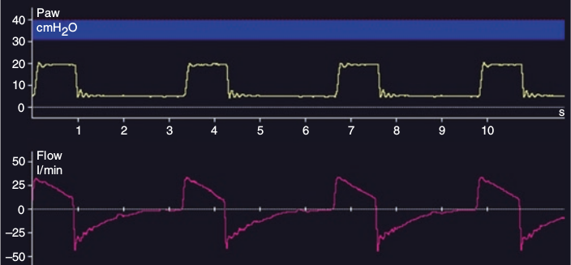

ونتیلاتور فقط فشار راه هوائی و شدت جریان راه هوائی را اندازه میگیرد و سپس حجم را از روی شدت جریان بدست آمده محاسبه میکند. بنابراین فشار و شدت جریان تمام اطلاعات لازم در مورد تعامل بیمار با ونتیلاتور را برای ما تأمین میکند.

مانیتورینگ ونتیلاسیون مکانیکی بر اساس آنالیز کدام منحنی است؟
۱ – فشار
۲ – شدت جریان
۳ – حجم
۴ – تعامل فشار و شدت جریان
۵ - دما